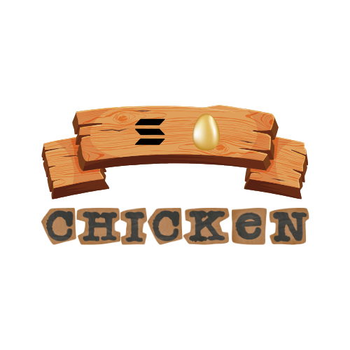
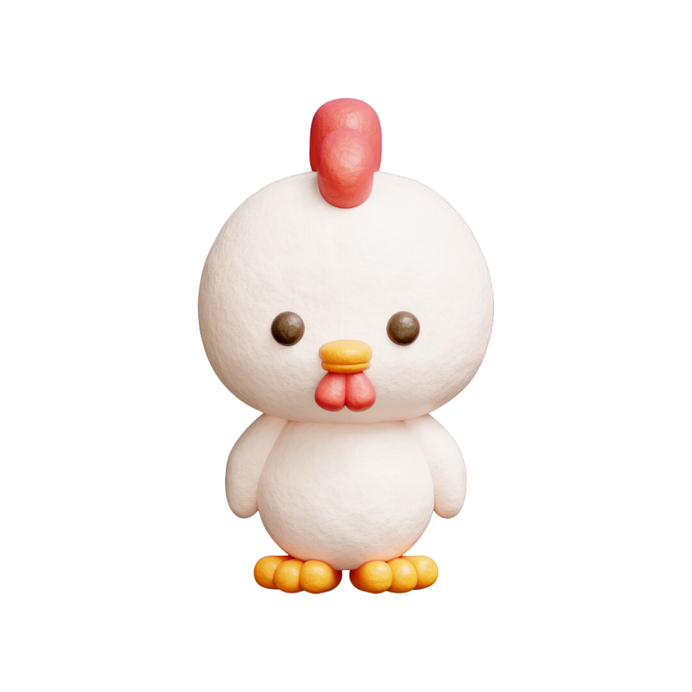

Tap the Chicken to Earn Chicken Tokens

You have 0 Chicken Tokens.
Your Level: 1
Today's Reward: 500 Chicken Tokens
Claim Your Daily Reward
Follow us on Twitter
+5000 Tokens
Join our Telegram
+5000 Tokens